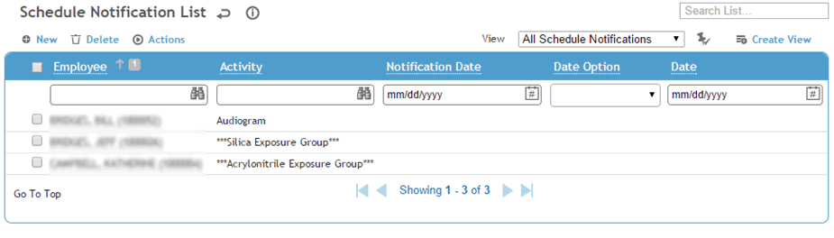
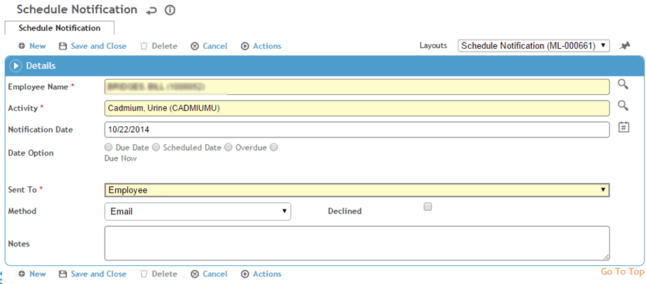

The Notifications list allows you to keep track of the date employees were notified about recall activities.
The Cority Email Notification Utility sends notification emails and reminder emails to employees who are due for tests (see Working with MAEN Settings). The history of when these notifications were sent are saved into this notification list. There is also a Schedule Notifications report that will send email notices based on criteria that you enter.
In normal practice, records will not be added to this module through the screens below, except possibly to update the Declined checkbox if an employee refuses a test.
In any of the schedule views, choose Actions»Open Schedule Notifications.

To enter a new notification record, click New, or to modify an existing record, select the record in the list.

If an employee is not already selected, select the name of the employee who received the notification.
Select the Activity and enter the Notification Date (if different from current date).
Indicate that the activity is either due or scheduled on a specific date and enter the date, or indicate that the activity is either overdue or due now.
Use the Sent To list to indicate whether the notification was sent to the employee, the employee’s supervisor, or both.
Use the Method list to indicate the type of notification sent (email, letter, telephone or other).
Indicate if the employee Declined the activity after notification.
Enter any Notes.
Click Save.